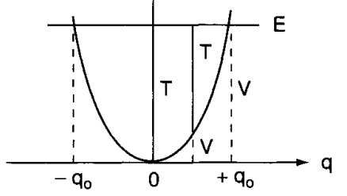

Raman spectroscopy - an essay
As we all know, lights is a weird object. Inconsistent as it is, we can only observe it using two models: wave and particle, even so on quantum scale. And both of them offers us different way to model the two main type of interpretation of Raman scattering effect: vibrational model and energy level transition model.
According to quantum mechanics, everything is quantized. That means even their state of energy is also quantized into \(n\) levels, which can then be specified. Because of such quantization, electrons and photons has the same kind of energy level that is available to them, only in interaction with matters. For processes, ideally blackbody radiation, hot object emit photons of all energy, not just \(E=hf\). The probability of the energy spectrum, defined on \([0,\infty)\) is governed by Planck’s black-body radiation law,
\[ B(\nu,T)=\frac{2h\nu^{3}}{c^{2}} \frac{1}{hv/ek_{B}T - 1} \]
where \(B\) is the spectral radiance of the black-body, \(\nu\) the frequency, \(T\) the absolute temperature, \(k_{B}\) as the Boltzmann constant, and \(c, h\) are Planck and speed of light in the medium constants respectively. Using such law, we obtain the famous curve of black-body radiation that was used to refute the ultraviolet catastrophe.
The mechanics of lights
It is only when interactions with matters and else that photon itself exhibits quantization and transitioning periods. Our interest lies in the structure of such interaction, with respect to a particular phenomenon between light and matter - scattering. Or more specifically, Raman scattering effect.
Molecular spectra
Photon can be said to be an electromagnetic radiation travelling in a specific way. The electric field strength \(E\) at a given time \(t\) is expressed by \(E=E_{0}\cos{(2\pi vt)}\), where \(E_{0}\) is the amplitude and \(v\) is the frequency of radiation.
The distance between two points of the same phase in successive waves is called the “wavelength”, \(\lambda\), which is measured in units such as angstrom, nanometer \((nm)\), millimicron \((m\mu)\) , or centimeter \((cm)\). The frequency, is the number of waves in the distance light travels in one second, hence,
\[v=\frac{c}{\lambda}\]
where \(c\) is the velocity of light (\(3\times_{1}0^{10}\mathrm{cm/s}\)). Usually, in vibrational spectroscopy, we use the wavenumber, \(\tilde{v}\), defined by \[\tilde{v}=\frac{v}{c}\] The difference between \(v\) and \(\tilde{v}\) is obvious, the dimension is different of \(1/L\), or, in centimeter, is \((1/s)(cm/s)=1/cm\). Thence,
\[\tilde{v}=\frac{v}{c}=\frac{1}{\lambda}(\mathrm{cm}^{-1})\]
As shown, the wavenumber \(\tilde{v}\) and frequency \(v\) are different parameters, yet are often used interchangeably. Thus, an expression such as frequency shift of \(30\mathrm{cm}^{-1}\) is used conventionally by IR and Raman spectroscopists.
If a molecule interacts with an electromagnetic field, a transfer of energy from the field to the molecule can occur if only when Bohr’s frequency condition is satisfied. Namely, \[\Delta E=hv=h \frac{c}{\lambda}=hc \tilde{v}\]
Here, quantization is in effect, and \(\Delta E\) is the difference in energy between two quantized states, \(h\) is the Planck constant \((6.62\times 10^{-27}\mathrm{ergs\:s})\). Thus, \(\tilde{v}\) is directly proportional to the energy of transition. As we then also see, other frequencies in the blackbody’s radiation would not trigger such transfer process, and either is absorbed in to the background radiation, or is entirely skipped, or, in wave mechanics, absorbed or destructed. Suppose that
\[ \Delta E=E_{2}-E_{1} \]
where \(E_{2}\) and \(E_{1}\) are the energies of the excited and ground states, respectively. Then, the molecule absorbs \(\Delta E\) when it is excited from \(E_{1}\) to \(E_{2}\), and emits \(\Delta E\) when it reverts from \(E_{2}\) to \(E_{1}\). Another effect can happen is radiationless transition, for example, when a molecule loses \(\Delta E\) via molecular collision.

Using the above relationship, we can write
\[ \Delta E=E_{2}-E_{1}=hc \tilde{v} \]
The magnitude of \(\Delta E\) is different depending upon the origin of the transition. We are mainly concerned with the mechanics of Raman and IR spectra, and hence would see them in the range of \(10^{4}\sim 10^{2}\mathrm{cm}^{-1}\) region. They would originate from vibrations of nuclei constituting the molecule, hence, you would also see analysis with molecules in them, and not atoms. Lastly, we would want to mention that, or recall, if you are familiar with it, that Raman phenomenon is very much related to both electronic transition and vibrational states, and hence, vibrational mechanics of inter-molecular behaviours.
Vibration and Diatomic vibration
In general, matters at the molecular scale do indeed, vibrate. In general, vibration is defined to be the mechanical phenomenon whereby oscillations occur about the equilibrium point, and is inherently a classical phenomenon. 1. And more of such, is that in general, vibration act is considered of system from two (diatomic) or more molecules.
1 See this post, which also discusses the mechanics of single-atom vibration. The link also gives an explanation that the interpretation of quantum mechanics, as well as observations, permits vibration in the sense of probability fluctuation, but not actually phonon. However, it is actually is the molecular vibration of the atom itself, that correlates, in the single atom case, to phonon modes - which is the vibrational mechanics of many-atom case. However, in such case, the vibration system is so small, plus their cause is now not molecular bonding and electronic structure, but rather the atomic structure between subparticles (so, something like this)
Consider the vibration of a diatomic molecule in which two atoms are connected by a chemical bond. We assume the interaction and energy transition from internal and external environment of the system causes perturbation to the equilibrium state of the molecular structure. Then, we have two explanation of the classical and quantum mechanical way. For the classical case, the assumption is that the equilibrium-based mechanics obeys Hooke’s law for the chemical bond, hence giving us the equation of motion and total energy \(E\) as
Usually, in multi-atom system, chemical bonds are what that provides the molecular structure. Chemical bond is an attraction force between atoms or molecules, which allows for the formation of chemical compounds.
Transitions then typically, will consists of factors such as the bond strength (for example, I-bond versus II-bond would be a contributing factor), bond length being the average distance between nuclei of two bonded atoms in pair. Vibrational motion and hence spectroscopic actions and then is based on the below-threshold of dissociation - which unlink such bond, to perturb the system by hitting it with energy. This energy excites the molecule, causing strains and pull, and hence vibrational patterns.
On the other side of it, vibrational modes, which will be discussed later on, also relies on the topological ontology of the system, such is to say that the polarization, electronic configuration of the bonding system and molecular properties affect the vibrational shape of such molecule, hence the signature that it exhibits.
\[ \begin{align} q &= q_{0} \sin\left(2\pi v_{0}t + \varphi\right) \\ &= q_{0} \sin\left[2\pi \left( \frac{1}{2\pi} \sqrt{\frac{K}{\mu}} \right) t + \varphi\right] \end{align} , \quad \quad E = 2\pi^{2}v_{0}^{2}\mu q_{0}^{2} \]
for \(q\) the displacement, \(\mu=m_1 m_2/ (m_1 + m_2)\) the reduce mass, \(q_0\) the maximum displacement, \(\varphi\) as phase constant, and \(v_{0}\) being the classical vibrational frequency. The vibrational pattern results in the potential energy diagram similar to a harmonic oscillator.

For quantum mechanics, the problem is akin to solving the Schrödinger equation of potential:
\[ \frac{d^{2}\psi}{dq^{2}} + \frac{8\pi^{2}\mu}{h^{2}} \left( E - \frac{1}{2}Kq^{2}\right) \psi = 0 \]
Which gives us the following set of eigenvalues (energy) and eigenfunctions: \[ E_{v} = hv \left(v+ \frac{1}{2}\right)= h c \tilde{v}\left(v+ \frac{1}{2}\right), \quad \psi_v = \frac{\left( \alpha / \pi \right)^{1/4}}{\sqrt{2^v \, v!}} \, e^{-\alpha q^2 / 2} \, H_v\left( \sqrt{\alpha} \, q \right) \]
where \(H_{\alpha}\) is a Hermite polynomial of the \(v\)th degree. 2
2 The use of Hermite polynomial is fairly classic of an approximation.
What can we say about those results? The quantum mechanical frequency and classical frequency, which is fairly different from each other, even though they are the same in frequency and such, relies on several key treatments.
First, the classical treatment treat \(E=0\) when \(q\) is zero, while quantum mechanics treat at that point \(E=1/2hv\) (zero point energy). Secondly, the energy of such a vibrator can change continuously in classical mechanics, of which we have been discussed in the continuity problem of photonic subject. In quantum mechanics, the energy change of such system can only be in range of \(hv\) quantization, which is reasonable considering our assumption of inter-molecular interaction filtering. Thirdly, the vibration is confined within the parabola in classical mechanics, however, in quantum mechanics such can be absent, for the tunnel effect to potentially exists in practice.
Furthermore, \(hv\) is an idealization. In practice, atomic molecular potential different is approximated by the Morse potential function, which is
\[ V = D_{e}(1-e^{-\beta q})^{2} \]
Here, \(D_{e}\) is the dissociation energy and \(\beta\) is a measure of the curvature at the bottom of the potential well.
According to quantum mechanics, in addition, we would most likely see transition involving \(\Delta \nu = \pm 1\), but not usually \(\Delta \nu = \pm n\) for \(n\neq 1\), for \(\nu\) the energy level. Coincidentally, such transition appears most strongly both in IR and Raman spectra. This is expected from the Maxwell-Boltzmann distribution, which state the population for \(\nu=1,\nu =0\) state as
\[ \frac{P_{\nu=1}}{P_{\nu=0}} = \exp{(-\Delta E /kT)} \]
Origin of Raman Spectra
Appendix
Appendix 1. Raman band correlation
| Wavenumber Range (cm⁻¹) | Approximate Group | Intensity |
|---|---|---|
| 100–210 | Lattice vibrations | Strong |
| 150–430 | Xmetal-O | Strong |
| 250–400 | C-C aliphatic chain | Strong |
| 295–340 | Se-Se | Strong |
| 425–550 | S-S | Strong |
| 460–550 | Si-O-Si | Strong |
| 490–660 | C-I | Strong |
| 505–700 | C-Br | Strong |
| 550–790 | C-Cl | Strong |
| 580–680 | C=S | Strong |
| 630–1250 | C-C aliphatic chains | Moderate |
| 670–780 | C-S | Strong |
| 720–800 | C-F | Strong |
| 800–950 | C-O-C | Weak |
| 910–960 | Carboxylic acid dimer | Weak |
| 990–1100 | Aromatic rings | Strong |
| 1010–1095 | Si-O-C | Weak |
| 1010–1095 | Si-O-Si | Weak |
| 1020–1225 | C=S | Strong |
| 1025–1060 | Sulfonic acid | Very weak |
| 1050–1210 | Sulfonamide | Moderate |
| 1050–1210 | Sulfone | Moderate |
| 1120–1190 | Si-O-C | Weak |
| 1145–1240 | Sulfonic acid | Very weak |
| 1315–1435 | Carboxylate salt | Moderate |
| 1320–1350 | Nitro | Very strong |
| 1355–1385 | C-CH₃ | Weak |
| 1365–1450 | Aromatic azo | Very strong |
| 1405–1455 | CH₂ | Weak |
| 1405–1455 | CH₃ | Weak |
| 1450–1505 | Aromatic ring | Moderate |
| 1535–1600 | Nitro | Moderate |
| 1540–1590 | Aliphatic azo | Moderate |
| 1550–1610 | Aromatic/hetero ring | Strong |
| 1550–1700 | Amide | Strong |
| 1600–1710 | Ketone | Moderate |
| 1610–1740 | Carboxylic acid | Moderate |
| 1625–1680 | C=C | Very strong |
| 1630–1665 | C=N | Very strong |
| 1690–1720 | Urethane | Moderate |
| 1710–1725 | Aldehyde | Moderate |
| 1710–1745 | Ester | Moderate |
| 1730–1750 | Aliphatic ester | Moderate |
| 1735–1790 | Lactone | Moderate |
| 1740–1830 | Anhydride | Moderate |
| 1745–1780 | Acid chloride | Moderate |
| 2020–2100 | Isothiocyanate | Moderate |
| 2070–2250 | Alkyne | Strong |
| 2080–2150 | Si-H | Moderate |
| 2090–2170 | Isonitrile | Moderate |
| 2100–2170 | Thiocyanate | Very weak |
| 2110–2160 | Azide | Moderate |
| 2200–2230 | Aromatic nitrile | Moderate |
| 2200–2280 | Diazonium salt | Moderate |
| 2220–2260 | Nitrile | Moderate |
| 2230–2270 | Isocyanate | Very weak |
| 2290–2420 | P-H | Very weak |
| 2530–2610 | Thiol | Strong |
| 2680–2740 | Aldehyde | Weak |
| 2750–2800 | N-CH₃ | Weak |
| 2770–2830 | CH₂ | Strong |
| 2780–2830 | Aldehyde | Weak |
| 2790–2850 | O-CH₃ | Weak |
| 2810–2960 | C-CH₃ | Strong |
| 2870–3100 | Aromatic C-H | Strong |
| 2880–3530 | OH | Weak |
| 2900–2940 | CH₂ | Strong |
| 2980–3020 | CH=CH | Strong |
| 3010–3080 | =CH₂ | Strong |
| 3150–3480 | Amide | Moderate |
| 3150–3480 | Amine | Moderate |
| 3200–3400 | Phenol | Weak |
| 3210–3250 | Alcohol | Weak |
| 3250–3300 | Alkyne | Very weak |
Appendix 2 - IR Band Correlation
| Wavenumber Range (cm⁻¹) | Group/Bond | Intensity |
|---|---|---|
| 150–600 | lattice vibrations, M–O, Se–Se, S–S, X–metal–O (e.g. Si–O–Si, S–S…) | Strong (fingerprint) |
| 650–500 | C–I stretch | Medium |
| 700–600 | C–Br stretch | Medium |
| 840–600 | C–Cl stretch | Medium |
| 1000–1400 | C–F stretch | Medium–strong |
| 1000–1225 | C–C aliphatic chains | Moderate |
| 1000–1225 | C=C (aromatic ring) | Weak–medium |
| 1000–1225 | Si–O–C | Medium |
| 1000–1225 | C–O–C (ethers) | Strong–medium |
| 1200–1000 | Carboxylate salt (COO–) | Moderate |
| 1315–1435 | C–CH₃ (–CH₃ rock, alkane)… | Medium |
| 1360–1290 | N–O symmetric stretch (nitro) | Weak–medium |
| 1550–1475 | N–O asymmetric stretch (nitro) | Medium–strong |
| 1550–1610 | aromatic/hetero ring C=C stretch | Medium |
| 1600–1475 | aromatic C–H bend/oop (rings) | Medium |
| 1660–1640 | C=C stretch (alkenes) | Medium |
| 1685–1665 | C=C stretch (α,β‑unsaturated) | Medium |
| 1625–1680 | C=C (strong conjugation) | Medium |
| 999–1100 | aromatic ring overtones/fingerprints | Weak |
| 1000–1100 | C–N (sulfonamide), C–S (thioethers) | Medium |
| 1025–1060 | sulfonic acid (–SO₃H) | Weak–very weak |
| 1050–1210 | sulfonamide/–sulfone (S=O stretch) | Moderate |
| 1145–1240 | sulfonic acid (S=O stretch) | Very weak |
| 1320–1350 | aromatic azo (–N=N–) | Medium |
| 1540–1590 | aliphatic azo (–N=N–) | Moderate |
| 3150–3480 | N–H stretch (amines, amides) | Medium–strong |
| 1640–1560 | amide I (C=O stretch) | Strong |
| 1560–1515 | amide II (N–H bend) | Medium |
| 3200–3400 | phenol O–H stretch | Broad, medium |
| 3400–3250 | alcohol O–H stretch (H‑bonded) | Broad, strong |
| 3640–3610 | alcohol/phenol O–H (free) | Sharp, strong |
| 3210–3250 | alcohol O–H (free) | Medium |
| 3200–3400 | amine N–H stretch | Medium |
| 3330–3270 | ≡C–H stretch (terminal alkyne) | Sharp, strong |
| 2000–2100 | C≡C stretch (alkynes) | Variable |
| 2200–2240 | C≡N stretch (nitriles) | Medium, sharp |
| 2275–2250 | N=C=O stretch (isocyanates) | Strong, broad |
| 2100–2170 | N–C≡S (thiocyanate) | Weak |
| 2110–2160 | azide (N₃) | Medium |
| 2020–2100 | isothiocyanate (–N=C=S) | Moderate |
| 1550–1700 | C=O stretches (amide, ester, acid…) | Strong |
| 1750–1735 | aliphatic ester (C=O) | Strong |
| 1745–1780 | acid chloride (C=O) | Strong |
| 1735–1790 | lactone (C=O) | Strong |
| 1740–1830 | anhydride (C=O) | Strong |
| 1710–1725 | aldehyde (C=O) | Medium–weak |
| 1710–1745 | ester (C=O) | Strong |
| 1720–1700 | ketone (C=O) | Strong |
| 1760–1690 | carboxylic acid (C=O) | Broad, strong |
| 2850–2750 | aldehyde C–H stretch | Weak–medium |
| 3000–2850 | C–H stretch (alkanes, CH₂, CH₃) | Strong |
| 2870–3100 | aromatic C–H stretch | Strong |
| 3090–3000 | =CH₂ stretch (alkene) | Medium |
| 2980–3020 | CH=CH stretch | Medium |
| 2750–2800 | –CH₃ (aldehyde) | Weak |
| 2770–2830 | CH₂ (alkane) | Strong |
| 2790–2850 | O–CH₃ (ethers) | Medium |
| 2530–2600 | S–H stretch (thiol) | Weak |
| 2020–2100 | alkyne (C≡C) | Variable |
| 2080–2150 | Si–H stretch | Moderate |
| 2090–2170 | isonitrile (–N≡C) | Moderate |
| 3250–3300 | ≡C–H (alkyne) | Sharp, strong |